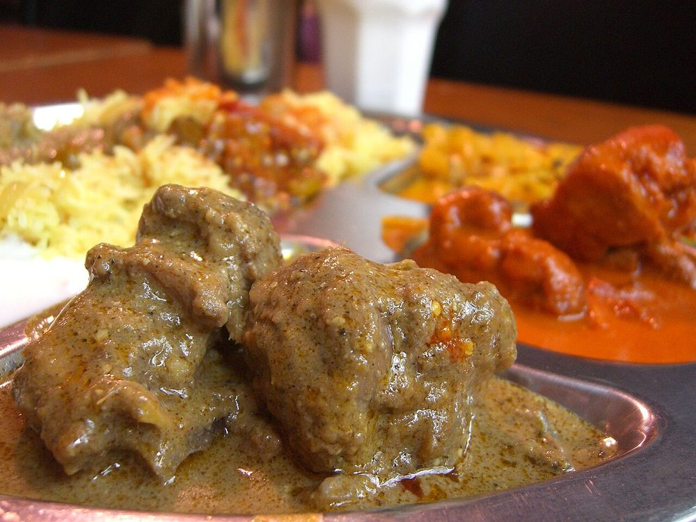

Murgh Korma
pale, fragrant chicken in a yogurt and cashew gravy with no chilli heat to speak of

Contains: milk, tree nuts
Ingredients
Quantities for 4.
- 800g bone-in, in curry pieces Chickenbone-in gives the gravy its body
- 200g, whisked smooth Yogurt
- 3 medium, thinly sliced Oniontwo for birista, one for the paste
- 15, soaked 20 minutes in hot water Cashew
- 10, blanched and peeled Almonds
- 5 tbsp Ghee
- 1 tbsp paste Ginger
- 1 tbsp paste Garlic
- 2 tsp Coriander Powder
- 1 tsp Fennel Powderthe quiet sweetness behind an Awadhi gravy
- 5 green Cardamom
- 4 Cloves
- 1 inch stick Cinnamon
- 1 Bay Leaf
- 1/4 tsp Mace
- 1/2 tsp White Pepperheat without staining the gravy
- a pinch in 2 tbsp warm milk Saffronoptional
- 1/2 tsp Kewra Wateroptional
- 300ml, warm Water
- to taste Salt
Cookware
stovetop, blender
Checked against the ingredient list for ten allergens: milk, egg, fish, crustaceans, tree nuts, peanuts, sesame, mustard, soy and gluten. Brands vary, so read the label on anything new to you.
Before you start
- Bring the yogurt to room temperature and whisk it loose. Cold yogurt straight from the fridge splits on contact.
- Soak the cashews in hot water 20 minutes so the paste grinds silky rather than grainy.
- This is a white gravy: no tomato, no browning of the chicken. Keep the heat low throughout.
Method
- Fry two sliced onions in 3 tbsp ghee over medium heat until evenly brown, 10–12 minutes. Drain and reserve the birista.
- Grind the soaked cashews, almonds and half the birista to a smooth paste with 4 tbsp water.
- In the same ghee add the remaining ghee, bay leaf, cardamom, cloves and cinnamon and let them swell for 30 seconds.
- Add the third sliced onion and cook gently until soft and pale gold, 6 minutes, without letting it colour further.Any darkening here and the finished korma goes muddy instead of ivory.
- Stir in the ginger and garlic pastes and fry 2 minutes until the raw smell lifts.
- Add the chicken and turn it in the masala over medium heat for 5 minutes, until it turns opaque but takes no colour.
- Take the pan off the heat, stir in the whisked yogurt in three additions, then return to the lowest flame and cook 6–8 minutes, stirring constantly, until the fat separates.Off the heat, in stages, stirring. That is the whole trick to yogurt not curdling.
- Stir in the nut paste, coriander powder, fennel powder, mace, white pepper and salt and cook 4 minutes.
- Pour in 300ml warm water, cover and simmer very gently 20–25 minutes until the chicken is tender.
- Finish with the saffron milk, kewra water and the remaining birista crushed over the top. Rest covered 10 minutes before serving.The rest is not optional. The gravy tightens and the perfume settles in.
Safe temperatures: Chicken and duck are done at 74°C / 165°F, taken at the thickest part and clear of the bone. Reheat leftovers to 74°C / 165°F. FoodSafety.gov
Storage
Keeps 3 days refrigerated and tastes better on day two. Reheat covered on low with a splash of water; boiling will split the yogurt gravy.
Nutrition Low estimate
High protein: 47 g a serving, 39% of the calories
| Per serving418 g | Per 100 g | |
|---|---|---|
| Calories | 477 kcal | 115 kcal |
| Protein | 46.8 g | 11 g |
| Carbohydrate | 14.2 g | 3 g |
| of which sugars | 6.1 g | 1 g |
| Fibre | 3.0 g | 1 g |
| Fat | 25.7 g | 6 g |
| of which saturated | 12.7 g | 3 g |
| of which unsaturated | 10.7 g | 2 g |
Ingredients given to taste count as zero, so the real figures run a little higher. Estimated from raw ingredients using USDA FoodData Central.
More like this: Gluten-free Indian recipes · Awadhi/Lucknowi recipes
Times, yields, allergens and nutrition are guidance. Use your own judgement on doneness and on storing. More in About.